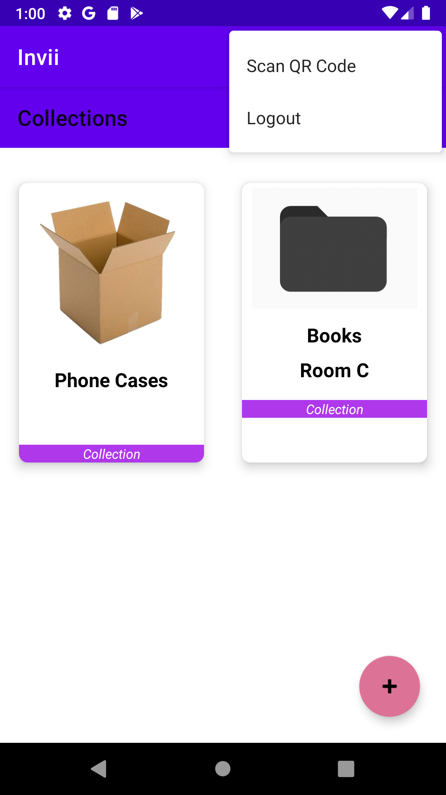
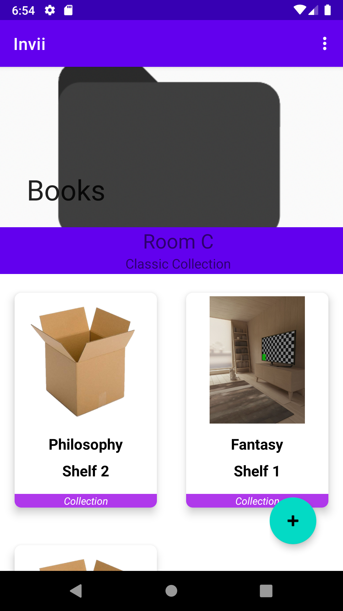

My portfolio


Invii - Software Engineering Class
Invii is the Inventory Manager application developed for Android. It has user accounts, registration, and login.
It could also set custom pictures for each category or item and scan QR codes.
10Print - Personal Project
This 10Print program is written in Python3 with TkInter.
It is the modernized version of the 10Print BASIC command on the Commodore 64. I took the inspiration from The Coding Train in which he made the 10Print in Processing.